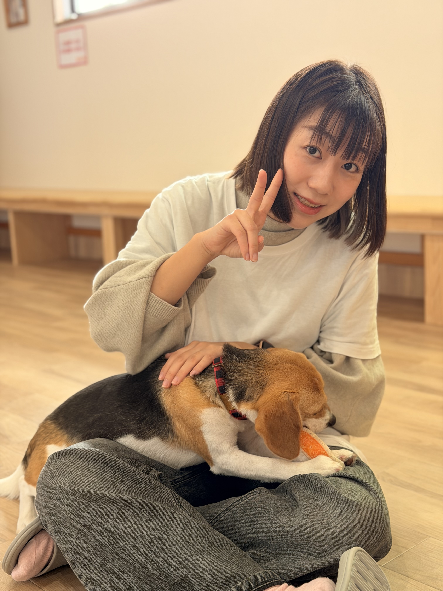

Where I Show Up
Different platforms, different moods — but always me.
I turn curiosity into things you can click
Digital marketer by day. Creator, builder, and AI explorer — always.
Based in Japan. I tell stories through data, build ideas through code, and document life because it helps me think.
Currently exploring: AI as a creative collaborator
" I don't wait until I'm ready.
I start — and clarity follows. — a personal operating principle

I'm Zyal. Most days I work in healthcare marketing — translating complex ideas into stories that actually connect. But when the laptop stays open past midnight, it's because I'm chasing a thread: wiring up an AI experiment, sketching a new project, or writing something I'll probably post on Xiaohongshu before breakfast.
I'm happiest in the overlap — where marketing meets making, where a weekend prototype teaches more than any course, and where the best ideas come from following your curiosity instead of a plan. That energy runs through everything here.
Ideas I keep coming back to — not because I have to, but because I can't stop.
The things I notice, the places I wander, and the thoughts I write down before I forget them.
Getting lost on purpose — in back streets, train stations, and cities I don't know yet.
Reflections on work, identity, and what it means to live between cultures.
Morning coffee, evening walks, weekend reads — the quiet structure behind the noise.
Different platforms, different moods — but always me.
Not a résumé — just the things I'm genuinely good at and still getting better at.
SEO, paid media, campaigns — the kind of work where creativity and spreadsheets coexist.
Marketing in an industry where trust matters more than trends. I take that seriously.
Prompting, prototyping, building things that didn't exist yesterday. The fun part.
Building pages, reading analytics, automating the boring stuff so I can focus on the interesting stuff.
Each one started as a "what if" — built with AI tools, late-night energy, and zero deadlines.
What if a website could feel like a quiet afternoon? An interactive space where mood shapes the experience.
Built in one night to explore calm in digital space View Project →I wondered: do people from different countries remember childhood the same way? So I built a place to find out.
Started from a late-night conversation about nostalgia View Project →Part game, part story, part excuse to play with character design. Horse racing meets creative fiction.
An experiment in playful worldbuilding with AI View Project →A love letter to noodle soup. Track, rank, and map the best ramen spots — because someone had to.
Born from eating too much ramen and wanting to rank it all View Project →A tongue-in-cheek career simulator about surviving corporate marketing — emails, meetings, stress, and all.
Made because if you can't laugh at the job, what can you do View Project →